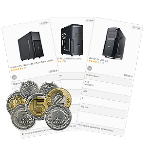

Składamy komputer. Poradnik użytkownika.
Z poradnika dowiesz się, jak i gdzie samodzielnie kupić części i jak złożyć komputer. Jak dobrać parametry do potrzeb oraz jak nie dać się zwieźć reklamom.
Komputery dawno przestały być towarem luksusowym. Niemal w każdym domu znajduje się chociaż jeden. Ale aby wejść w posiadanie takiego sprzętu trzeba go oczywiście nabyć. I tu stajemy przed problemem, jaki ma to być sprzęt? Posiadając określony budżet teoretycznie najprościej jest udać się do supermarketu, albo dużego sklepu sieciowego i wziąć gotowy zestaw mieszczący się w budżecie. Często ulegamy namowom pracowników i przekonani o mocy danego sprzętu dokonujemy zakupu. Ale czy jest to zdrowe i odpowiednie podejście? Zapewniam, że żaden „znawca tematu”, czy też komputerowiec-amator nigdy takiego zakupu by nie dokonał, a z całą pewnością zdecydowałby się na samodzielne skomponowanie i złożenie zestawu odpowiadającego jego wymaganiom.
Komputery dawno przestały być towarem luksusowym. Niemal w każdym domu znajduje się chociaż jeden. Ale aby wejść w posiadanie takiego sprzętu trzeba go oczywiście nabyć. I tu stajemy przed problemem, jaki ma to być sprzęt? Posiadając określony budżet teoretycznie najprościej jest udać się do supermarketu, albo dużego sklepu sieciowego i wziąć gotowy zestaw mieszczący się w budżecie. Często ulegamy namowom pracowników i przekonani o mocy danego sprzętu dokonujemy zakupu. Ale czy jest to zdrowe i odpowiednie podejście? Zapewniam, że żaden „znawca tematu”, czy też komputerowiec-amator nigdy takiego zakupu by nie dokonał, a z całą pewnością zdecydowałby się na samodzielne skomponowanie i złożenie zestawu odpowiadającego jego wymaganiom.
Składak czy gotowiec?
W tym poradniku postaram się udowodnić, że wcale nie trzeba być „wielkim znawcą” żeby zestaw komputerowy zaplanować i złożyć. Spróbuję przekazać podstawową wiedzę na temat każdego z komponentów, oraz kryteriów jakimi powinniśmy się kierować przy ich wyborze. Moim celem będzie również udowodnienie wyższości popularnych „składaków” nad gotowymi komputerami z marketów.

Choć na pierwszy rzut oka może wydawać się inaczej, składanie komputerów jest naprawdę proste. Wystarczy nieco podstawowych wiadomości i odrobina wolnego czasu. Ale za to jaka satysfakcja!
Trzy główne powody, dla których nie warto kupować „gotowców”.
Trzy główne powody, dla których nie warto kupować „gotowców”.
1. Ekonomia
Każdy chce zarobić. Nie inaczej jest w przypadku komputerów kupowanych w całości. Czy to sklep, czy supermarket, czy aukcja internetowa – zawsze do relatywnej wartości zestawu trzeba doliczyć niemałą marżę ze strony sprzedawcy. Aby ceny były względnie konkurencyjne, sprzedawcy tną koszta na podzespołach wstawiając tańsze odpowiedniki, co odbija się na jakości produktu. Tym samym płynnie przechodzimy do drugiego punktu, czyli…
2. Jakość.
Budując komputer samemu, mamy wpływ w elementy jakich marek jest wyposażony. Wystarczy przejrzeć oferty supermarketów czy sklepów internetowych aby przekonać się jak ubogich informacji dostarczają sprzedawcy. Czym tak naprawdę jest „markowy zasilacz 500W„? Albo „superszybka pamięć RAM„? Tego typu opisy pojawiają się niebywale często, zwodzą pięknymi słówkami nie dając konkretnej informacji o danym produkcie. Zazwyczaj dajemy się nieświadomie naciągnąć na najtańsze możliwe podzespoły, a „markowy zasilacz” okazuje się tykającą bombą.
3. Elastyczność.
Dobierając podzespoły samemu możemy dopasować komputer idealnie do naszych potrzeb, nie musząc się godzić na zaproponowane gotowego rozwiązania. Części są ze sobą na tyle kompatybilne, że mnogość możliwości sprawia, iż ciężko napotkać dwie identyczne konfiguracje. W danym budżecie można złożyć kilka równie ciekawych propozycji, nie tylko przeznaczonych do różnych rozwiązań, ale również używanych w tym samym celu.
Z czego składa się komputer?

Komputery posiadają ujednoliconą budowę, różnią się jedynie typami poszczególnych elementów oraz ich parametrami. W skład jednostki komputerowej wchodzą:
- Procesor
- Płyta główna
- Pamięć RAM
- Karta graficzna
- Dyski twarde
- Zasilacz
- Obudowa
Jak złożyć komputer.
1.Procesor

2.Płyta główna

3.Pamięć RAM

4.Karta graficzna

5.Dysk twardy

6.Zasilacz

7.Obudowa